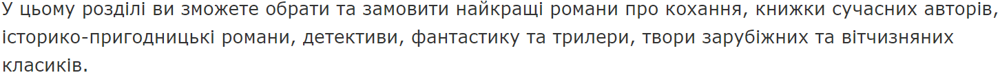

Художня література

 За жанрами
Списком
За жанрами
Списком
Сучасні автори


Романтична проза


Історична та пригодницька проза


Детективи


Трилери та жахи


Фантастика

Фентезі

Класична література


Комікси та манґи


Художня література: авторська вигадка, яка підкорює серця
Літературознавство дає визначення, що художня література — це різновид мистецтва, який використовує слово для передачі інформації. ЇЇ характерною рисою є наявність художньої вигадки. Саме вона притягує дітей, підлітків та зовсім дорослих людей, які не проти перенестися в уявний світ.
«КСД»: різноманіття каталогу художньої літератури
На сайті «КСД» художня література займає величезний розділ, в який включено біля 1100 примірників українською та російською мовами. Багатий асортимент міг би зробити вибір потрібної книги досить важким і довгим процесом. Тому для зручності користувачів усі книги художньої літератури було поділено на кілька груп відповідно до тематики:
- Сучасні автори. Тут є все: оповідання, романи, вірші на різноманітні теми для будь-якого віку. Читайте художні книги відомих зарубіжних сучасників: Ренсома Ріґґза, Пауло Коельйо, Дена Брауна, Стівена Кінга, а також вітчизняних авторів Ліни Костенко, Володимира Лиса, Макса Кідрука, Василя Шкляра.
- Романи про кохання. Від жінок-письменниць Наталії Гурницької, Джулії Лондон, Бертріс Смолл, Федеріки Моччи, які проникливо і чуттєво пишуть про почуття та любовні переживання.
- Пригодницько-історичні романи. Герої історій, що написали Дарина Гнатко, Марко Мальвальді, Віктор Вальд, Кетрін Беннер, Медлін Міллер, подають правильний приклад всім, хто читає художні книги на історичні теми.
- Детективи. Аґата Крісті, Жан-Крістоф Ґранже, Андрій Кокотюха — це лише деякі відомі письменники, детективні романи яких ви можете придбати в інтернет-магазині «КСД».
- Фантастика. Справжнім відкриттям може стати художня література українською мовою від авторів світових бестселерів Артура Кларка, Айзека Азімова, Френка Герберта, Роберта Шеклі тощо.
- Фентезі. Розділ для тих, хто ще не встиг прочитати «Лабіринт Фавна» Ґ. дель Торо й К. Функе або «Відьмака» Анджея Сапковського. Також він зацікавить шанувальників фентезі, які мріють поповнити власну колекцію книжок Стівена Кінга або Террі Пратчетта, або відкрити для себе сучасних авторів, поки мало відомих широкій аудиторії.
- Трилери. Твори хорор-тематики від С. Кінга, Е. Нейдермана, Діна Кунца — це художня література для людей зі сталевими нервами та стійкою психікою. Точно відомо: динамічний сюжет і непередбачений фінал читачеві гарантовано.
- Класика. Джейн Остін, Еріх Марія Ремарк, Василь Стус, Олесь Гончар, Теодор Драйзер — це лише короткий список улюблених класичних авторів у людей, які обожнюють читати художні книги українською мовою на одвічні життєві теми.
- Книги для підлітків. Джоан Ролінґ, Ренсом Ріґґз, Меделін Ру, Клайв Стейплз Льюїс, Е. Тернбулл, К. Гір пишуть книжки для підлітків, які з захопленням читають дорослі, і навіть зрілі люди.
- Комікси. Художня література від Н. Ґейман, М. Вейд, А. Мур — це книги для дітей, які відомі у всьому світі.
Під кожною представленою на сайті книжкою є короткий опис сюжету, ілюстрації та уривки. Остаточний вибір допоможуть зробити відгуки тих, хто вже встиг купити художню літературу українською мовою та прочитати її.
Як поповнити домашню колекцію художньої літератури
Інтернет-магазин «КСД» — це справжня знахідка для поціновувачів паперових книг. Тільки тут ви знайдете біля 3 тисяч книжок різної тематики й жанрів — від класики до сучасної літератури. В нашому інтернет-магазині постійно з’являються новинки.
Регулярні акції та розіграші дозволять купити художню літературу за зниженими цінами. Постійним клієнтам «КСД» доступні промокоди, спеціальні пропозиції та бонусний рахунок.
Долучайтеся до «КСД»: оформлюйте замовлення прямо зараз!